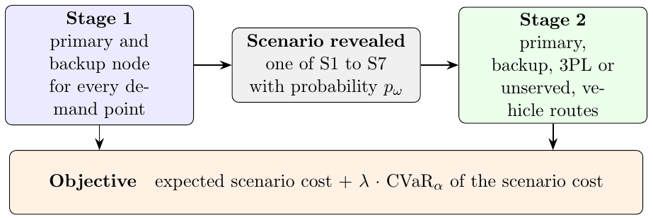
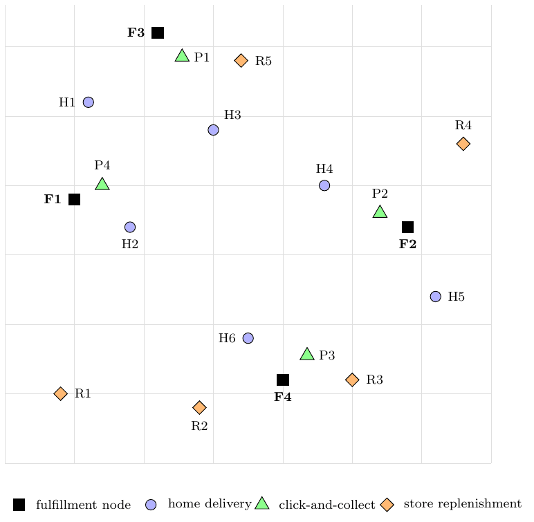
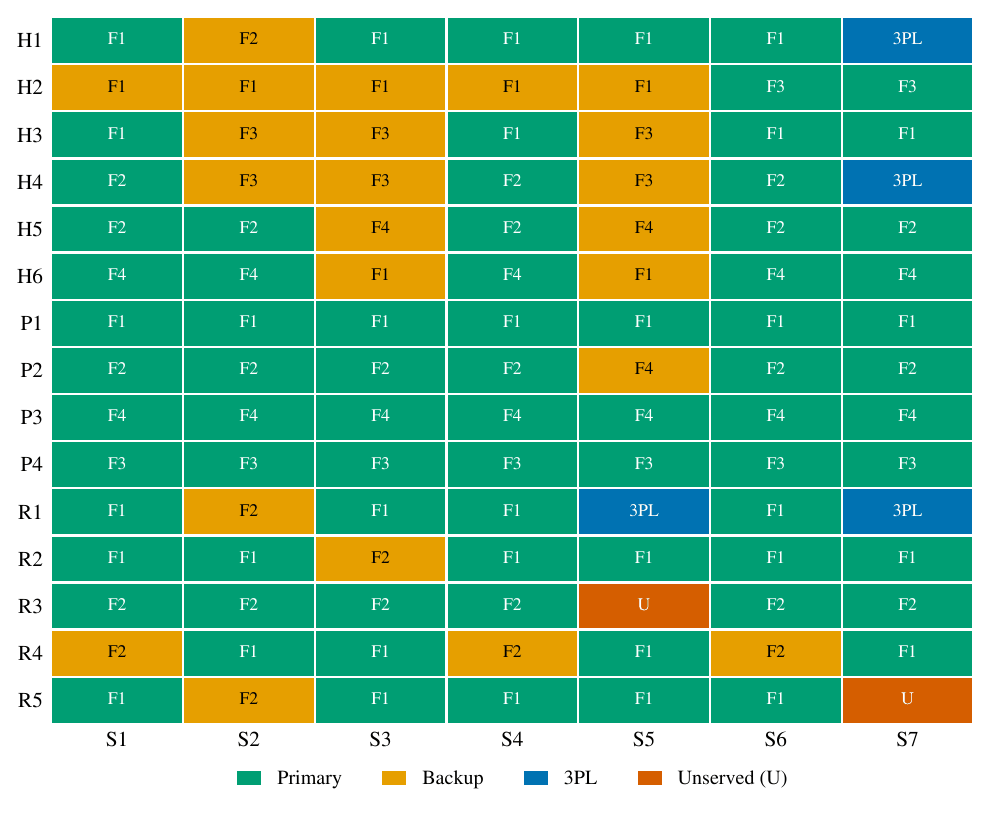
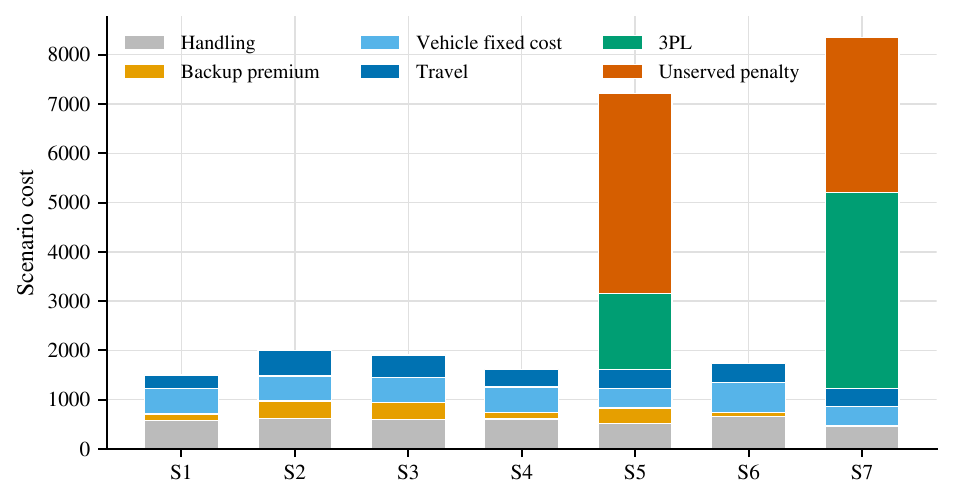
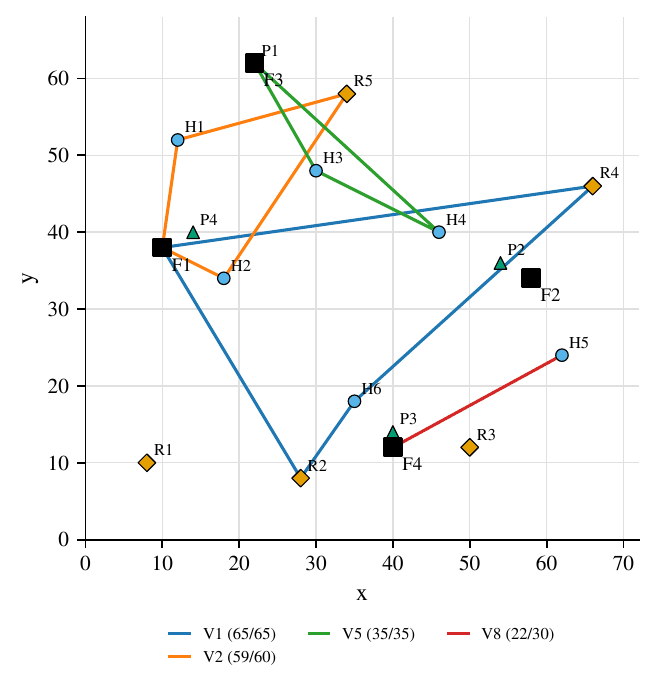
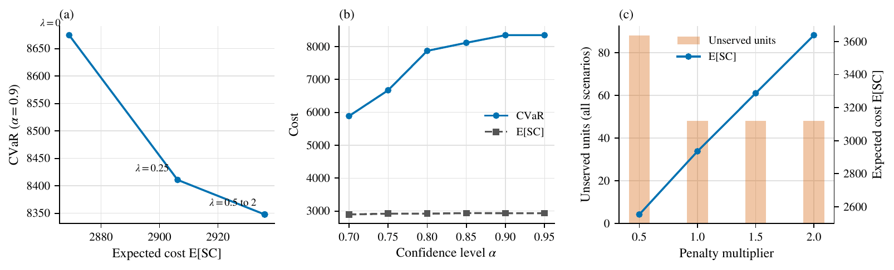
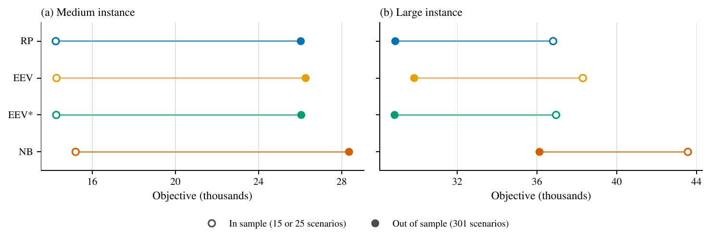

Optimizing Resilient Omnichannel Distribution Networks with Two-Stage Stochastic MILP and CVaR Objective
When a distribution centre goes down, the orders it was meant to serve still have to go somewhere. The thesis decides in advance where they go, and measures what that is worth under disruption.

The problem
An omnichannel retailer serves three channels from the same network: home delivery, click-and-collect and store replenishment. They share nodes, vehicles and capacity, so when one node fails, the disruption hits every channel it serves at once.
The thesis looks at one decision that can soften the blow. Before anything breaks, every demand point gets a primary node and a backup node. When a disruption happens, orders can move to the backup without a search for capacity under pressure. The question is how to choose these pairs well, given the channels, the vehicles, the limits of outsourcing to a third-party logistics (3PL) provider, and the risk of very expensive scenarios.

The model
In the first stage, before the scenario is known, each demand point gets a primary and a backup node. In the second stage, once a disruption scenario is revealed, each order is served by its primary, by its backup, by 3PL, or left unserved at a penalty, and the vehicles are routed. The objective is the expected cost plus a conditional value-at-risk (CVaR) term on the worst scenarios.
Routing is modelled exactly by listing every feasible vehicle route with its shortest tour, which keeps the model linear and small. One modelling point turned out to matter. If serving an order from its backup costs the same as serving it from its primary, the two labels are interchangeable and the solver swaps them freely. A small backup premium gives each role a meaning.
Scale and verification
Replacing arc-based routing and bilinear service terms with enumerated routes made the model four times smaller and turned an unsolved model into one that is proven optimal in seconds. A separate checker recomputes every cost, route and capacity from the raw data, and every run passes it.
| First version, arc-based | Final model, route-based | |
|---|---|---|
| Variables | 14,334 | 3,573 |
| Binary variables | 7,726 | 3,565 |
| Constraints | 8,863 | 1,128 |
| Result | not proven optimal | optimal in 3.4 s with HiGHS |
Results

Backups do most of the work. Compared with a design without backups, they cut the expected cost by 32.1 percent, 3PL orders from six to four and unserved demand from 127 to 48 units over the seven scenarios. In the scenarios that carry 80 percent of the probability, primaries and backups absorb the disruption with no outsourcing and no lost demand.
| Plan | Objective | Expected cost | CVaR | 3PL orders | Unserved units |
|---|---|---|---|---|---|
| Stochastic solution (RP) | 11,283.8 | 2,936.0 | 8,347.8 | 4 | 48 |
| Average-based plan, nearest backups (EEV) | 12,987.1 | 3,320.5 | 9,666.6 | 5 | 84 |
| Average-based primaries, best backups (EEV*) | 11,411.9 | 2,896.1 | 8,515.8 | 4 | 48 |
| No backups (NB) | 12,814.7 | 4,323.3 | 8,491.4 | 6 | 127 |
| Perfect information (WS) | 11,058.9 | 2,714.3 | 8,344.6 | – | – |
Planning with the scenarios instead of their average saves between 1.1 and 13.1 percent of the objective, depending on how the average-based plan picks its backups. Its primaries are almost as good as those of the stochastic plan. Its backups are not, because the average scenario never needs one. Perfect information would lower the objective by only 2.0 percent.

Routing under disruption

When the east distribution centre closes, its trucks are down too. Its home delivery orders move to their backup stores, its pickup order moves to a store, and the remaining vehicles cover the rest.
Since no vehicle can carry more than three orders, every route has at most three stops, and the model can list all of them in advance.
Risk and sensitivity

Moving the risk weight from 0 to 0.5 trades 2.3 percent more expected cost for 3.8 percent less CVaR. The effect works through the labels. With more weight on the worst scenario, the primary role moves to the node that serves the order in that scenario. Raising the penalty does not reduce the unserved demand, because it comes from exhausted capacity and from outsourcing that only takes whole orders.
Does it hold beyond the benchmark?
The benchmark is small and its scenarios are hand-made. I therefore wrote a generator for larger instances, with regional events that hit nearby nodes together, and tested every plan out of sample on 300 new scenarios per instance, with paired bootstrap intervals for the differences.
| Benchmark | Medium | Large | |
|---|---|---|---|
| Demand points | 15 | 26 | 42 |
| Scenarios | 7 | 15 | 25 |
| Variables | 3,573 | 6,457 | 12,974 |
| Solve time, Gurobi | 0.7 s | 3.1 s | 64.1 s |
| Expected cost cut by backups | 32.1% | 7.8% | 16.1% |
| Value of the stochastic solution, best backups | 1.12% | 0.17% | 0.40% |

The value of backups held and grew. Without them, the objective is 8.2 and 20.0 percent higher on the new scenarios. With good backups, the average-based primaries do as well as the stochastic ones, so the value of planning with scenarios lies in the backups. The test also showed that small scenario sets misjudge cost. The in-sample objective was 45 percent too low on one instance and 27 percent too high on the other, while the ranking of the plans stayed the same.
Summary
A backup assignment only means something if using the backup has a cost or is restricted to disrupted scenarios. With that in place, pre-committed backups are the main source of resilience, and the value of stochastic planning comes from choosing them with the disruptions in mind.
Python with Pyomo, HiGHS and Gurobi. Supervised by Prof. Jakob Puchinger. The thesis and the code are available on request.